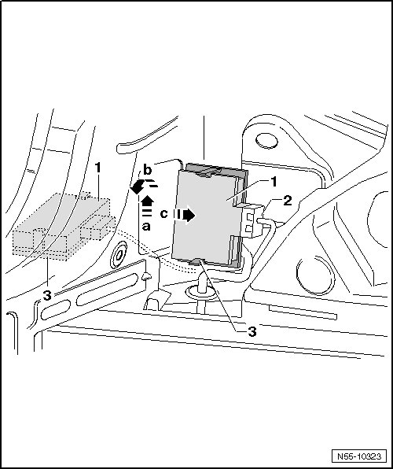

Control Module
Rear Lid
Control Module
Removing

- Remove left side wall trim.
- Bring the 2nd heater and A/C unit into the service position, if equipped.
- Reach under the tail lamps in the D-pillar. Remove the control module - 1 - and its mount - 3 - - arrow a -.
- Turn the control module so that the edge is facing up - arrow b -.
- Remove the control module from the D-pillar - arrow c -.
Installation
- Make sure the connector is attached correctly - 2 -.
- Install the control module in reverse order of removal.
- Make sure the control module is installed correctly - 1 -.
- If the control module was replaced, perform a basic adjustment. Refer to --> [ Rear Lid Electronics, Basic Setting ] Rear Lid
• If only the connector was disconnected and the current control module is being installed again, then erase the DTC memory.